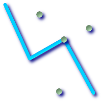

名前
ST_Crosses — 与えられたジオメトリが共通の内部の点を持ち、かつそうでない点を持つ場合に、TRUEを返します。
概要
boolean ST_Crosses(geometry g1, geometry g2);
説明
ST_Crosses takes two geometry objects and returns TRUE if their intersection "spatially cross", that is, the geometries have some, but not all interior points in common. The intersection of the interiors of the geometries must not be the empty set and must have a dimensionality less than the the maximum dimension of the two input geometries. Additionally, the intersection of the two geometries must not equal either of the source geometries. Otherwise, it returns FALSE.
数学的に述べると、次のようになります。
TODO: Insert appropriate MathML markup here or use a gif. Simple HTML markup does not work well in both IE and Firefox.

DE-9IMでは次のようになります。
T*T****** (for Point/Line, Point/Area, Line/Areaの場合)
T*****T** (for Line/Point, Area/Point, Area/Lineの場合)
0******** (for Line/Lineの場合)
他の次元の組み合わせでは、FALSEが返されます。
OpenGIS Simple Feature Specificationでは、この述語はPoint/Line, Point/Area, Line/Line, Line/Areaの場合についてのみ定義されています。JTS/GEOSでは、Line/Point, Area/Point, Area/Lineについて拡張しています。これによって関係が対称になっています。
![[重要]](images/important.png) | |
|
![[注記]](images/note.png) | |
この関数の呼び出しによって、ジオメトリで使用可能なインデクスを使用したバウンディングボックスの比較が自動的に行われます。 |
 このメソッドはOpenGIS Simple Features Implementation Specification for SQL 1.1.に準拠しています。 s2.1.13.3
このメソッドはOpenGIS Simple Features Implementation Specification for SQL 1.1.に準拠しています。 s2.1.13.3
このメソッドはSQL/MM仕様に準拠しています。 SQL-MM 3: 5.1.29
例
次に示す図全てで、TRUEが返されます。

|
|
|
|
roads(道路)とhighways(高速道路)の2つのテーブルを持っている場面を考えます。
CREATE TABLE roads ( id serial NOT NULL, the_geom geometry, CONSTRAINT roads_pkey PRIMARY KEY (road_id) );
|
CREATE TABLE highways ( id serial NOT NULL, the_gem geometry, CONSTRAINT roads_pkey PRIMARY KEY (road_id) );
|
次のようなクエリを使って、highwayとクロスするroadsのリストを決定します。
SELECT roads.id FROM roads, highways WHERE ST_Crosses(roads.the_geom, highways.the_geom);